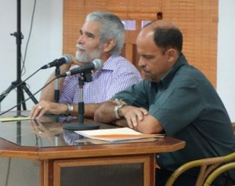
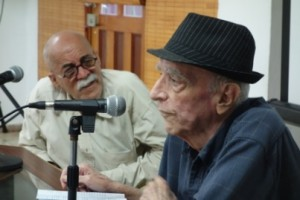

Para ello invitó a Carlos Augusto Alfonso (Havana, 1963), a quien calificó de poeta “esencial” en su generación, la que se caracterizó por romper con estilos más románticos y acríticos de los años 70, para proponer una mirada más inquisidora sobre la vida cotidiana, en franca ruptura del estilo y de los ángulos de lectura para temas tradicionales.
Resaltó su expresión ética de la realidad con cierta irreverencia y un posicionamiento desprejuiciado de su entorno. Sobre todo, su valentía en términos temáticos y el estilo de su poesía, en la que resalta un lenguaje particular, distanciado en gran medida de la generalidad de lo que escribían los poetas de su generación.
“… Y fíjense que digo “no bañarme” –cruzar y no bañarme–,
NO a la zambullida, ahora que es el cruce –ahora o nunca–
vertiente batuqueo, salina de los polos,
gesta fría, sangrienta, movediza que aúne
a dientes mondadientes de tiendas militares,
espadas azadones, lanzas de hoces.”
(Del poema Jordan)
De forma escueta y directa, el autor agradeció las palabras introductorias y la presencia de amigos y lectores, para dar paso a un recital de algunos de sus poemas donde demostró un verso alejado de su estilo al hablar: cada poema era un amplio cuerpo de palabras engarzadas de forma tal que, ante una aparente sencillez del lenguaje, daban como resultado un complejo entramado de razones, denuncias, esperanzas, procesos desde los más simples hasta los más elaborados.
De esta forma desfilaron, bajo títulos inesperados, escenas de La Jata —en Guanabacoa—, personajes tenebrosos de la historia planificando crímenes desde las divertidas calles de París, tribus aborígenes con sus aprendizajes ancestrales que se enfrentan a los avatares de la modernidad –vinculados al ahora y al aquí–, individuos y pasajes atravesando las más complejas realidades –aclaró que se ha dedicado a coleccionar “tuertos” de la historia, famosos y no tanto, militares, hombres de ciencia, artists, a quienes relaciona con los “agujeros negros”, entendidos como los cuerpos celestes y del planeta: crisis humanitarias, desigualdades como las que ocurren en Bangladesh o República Centroaficana, lugares insalubres de nuestra realidad nacional…
Carlos Augusto Alfonso ha publicado desde 1986 varios de sus libros de poesía y fue uno de los compiladores de la Antología de jóvenes poetas: Retrato de Grupo (Editorial Cuban lyrics, 1989). Ha ganado varios premios en su trayectoria literaria, destacándose los siguientes: Premio David de la UNEAC 1986, Premio UNEAC “Julián del Casal” de Poesía 1997, Premio Internacional de Poesía “Raúl Hernández Novás” 2001 y Premio de la Crítica 1997 and 2004, among others.
Homenaje al “patriarca” de la Bossa Nova

“La obra de Vinicius de Moraes es una de las poesías más hermosas e interesantes del planeta”, dijo el poeta Félix Contreras, resaltando que se trata de un país con una cultura muy rica, con tanta tradición literaria que cualquier minúsculo pueblito tiene destacados poetas. Incluso así, “en todo Brasil se canta su poesía, y mucho… tanto que los brasileños se sorprenden cuando se le considera como poeta”.
Al tema se refirió el también poeta Mario Martínez Sobrino, quien calificó a ese grande de la cultura brasileña como “un ser privilegiado, con grandes dotes para la poesía, la música y el cine”. Señaló que en Vinicius confluyeron un grupo de factores que lo hicieron multifacético, un hombre que se movió en todos los ambientes artísticos de su país con gran facilidad, al punto de convertirse en “el patriarca de la bossa nova”.
"And so, cuando más tarde me procure
Quizás la muerte, angustia de quien vive
Quizás la soledad, fin de quien ama
Pueda decir de amor que ya desvive:
Que no sea inmortal, puesto que es llama
Mas que sea infinito mientras dure”.
(of Soneto de fidelidad, traducción de Mario Martínez Sobrino)
Destacó que fue un hombre sin problemas económicos, lo que le permitió conocer el mundo y graduarse de Lengua y Literatura Inglesa en Oxford, United Kingdom; However, en ninguno de sus poemas se hace alusión a esta faceta de su vida. In addition, recalcó el perfil de su vida política y diplomática, a la que dedicó 26 años de su vida en diferentes lugares, hasta que la dictadura impuesta en 1968 le obligara al retiro forzoso.
However, a la par de sus responsabilidades, indicó que era un hombre “con propensión a la vida disoluta” y supo aprovechar bien su estancia diplomática en el exterior, resaltando su nombramiento como Cónsul brasileño en Los Ángeles, que le valió para compartir intensamente con artistas y figuras de la farándula en los Estados Unidos.
Su temprana y absurda muerte, to the 67 years of age, privó al Brasil de disfrutar aún más de la obra de uno de los más grandes exponentes de su cultura, de ahí las celebraciones que se han realizado en todo el mundo a causa de su centenario el pasado 19 October.
Al compás de Yo sé que te voy a amar terminó el recordatorio a este poeta que ha sido más reconocido en el mundo por la música, en clara demostración de que no existen fronteras humanas o artísticas para la trascendencia de la cultura, cuando se desarrolla con talento y creatividad.
By: Camilo García Lopez-trigo
Photos: Tony Ryan


Recent Comments